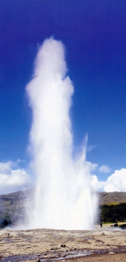
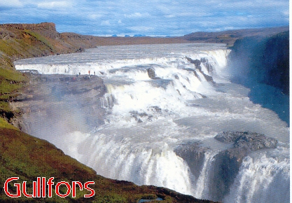
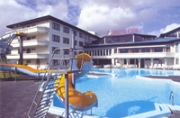

Island
Den 15 maj 2005 startade jag och Anita vår resa tillsammans med 22 andra medresenärer i en gruppresan från Arlanda till Island med destination Keflaviks flygplats utanför Reykjavik.
Vid ankomsten blev det busstransport till Blå Lagunen med sitt varma
mineralrika vattnet som
höll en temperatur mellan 37-39 grader.
Dagen avslutades med transport till Hveragerdi,
ca 45 km från Reykjavik, och Hotell Örk.
Dag 2 rundtur med buss till Islands mest välkända sevärdheter som Geysir, ett område där vatten sprutar upp ca 40 meter från ett hål i marken.
Detta sker på grund av ett övertryck som bildas
när varmts och kallt vatten möts långt nere under markytan. Gullfors ett av Islands mäktigaste vattenfall. Thingvellir är en historisk plats där den första församlingen på Island bildades år 930.
Dag 3 blev det södra kusten som besågs där uppehåll gjordes i fiskebyarna Eyrarbakki och Stokkseyri. Skulle vi denna dag ha stigit ur bussen och fortsatt rakt söderut så har första landkänningen blivit Antarktis (sydpolen). Intressant, eller hur.


Dag 4 stadsrundtur i Reykjavik där kända byggnader besågs och en
”Bill Clinton korv” kunde inhandlades i korvkiosken nere i hamnen.
Dag 5 dagen stod för egna aktiviteter som bad i hotellets pool med en värme på ca 37-38 grader och i luften var det mellan 2-5 grader på morgonen. Besök
i ett av de många växthus som finns i Hveragerdi där bl.a. bananer odlas.
Dag 6 tidig morgon, frukost 0430 med avresa till Keflaviks flygplats kl 0500 för att stiga ombord på flyget till Arlanda kl 0710 (svensk tid 0910).
Island, ett fascinerande land, ett land att upptäcka, med varma källor och stora glaciärer.
www.hotel-ork.is eller info@hotel-ork.is
De varma källorna håller vattentemperatur på ca 100 grader, det går enkelt att koka ägg i en varm källa.
